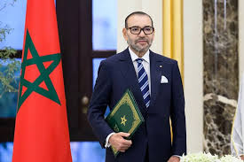
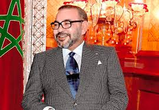
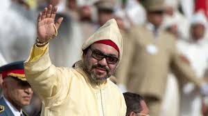
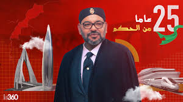

النشأة والبداية

وُلد الملك محمد السادس بن الحسن في 21 أغسطس 1963 بالعاصمة المغربية الرباط، داخل القصر الملكي، كأكبر أبناء الملك الحسن الثاني. منذ ولادته، تم تحضيره لدور سياسي مهم، إذ كان الابن الأكبر والوريث الشرعي للعرش. عُرف منذ صغره بالذكاء والطموح والتواضع، وهي صفات غرسها والده فيه منذ الطفولة.
بدأ تعليمه في المدرسة القرآنية بالقصر الملكي، حيث تعلم القرآن الكريم وحفظه، إلى جانب تلقيه مبادئ الدين الإسلامي واللغة العربية. هذه التربية جعلته مرتبطًا بثقافة وتاريخ المغرب منذ نعومة أظفاره. أكمل دراسته في المدارس الملكية، وبرز في مجال العلوم السياسية والقانون.
مسيرته الأكاديمية
بعد حصوله على شهادة البكالوريا عام 1981، التحق بكلية العلوم القانونية والاقتصادية والاجتماعية بجامعة محمد الخامس بالرباط، حيث حصل على الإجازة في القانون العام عام 1985. لم يكن طموحه الأكاديمي محدودًا داخل المغرب؛ بل توجه إلى فرنسا، حيث نال شهادة الدراسات المعمقة في العلوم السياسية. وفي عام 1993، حصل على الدكتوراه من جامعة نيس صوفيا أنتيبوليس بفرنسا، حيث كانت أطروحته بعنوان: "التعاون بين السوق الأوروبية والمغرب".
التدرج في المسؤوليات

قبل توليه العرش، قام الملك محمد السادس بالعديد من المهام الرسمية. في عام 1985، كان يمثل والده في المؤتمرات والاجتماعات الدولية. عُيّن في عام 1994 رئيسًا للجنة المنظمة للألعاب الفرانكوفونية، حيث برز دوره في تعزيز العلاقات الثقافية بين المغرب والدول الناطقة بالفرنسية.
أظهرت هذه المهام المبكرة شخصية قيادية ذات رؤية استراتيجية، وبرز كملك مستقبلي يستطيع قيادة المملكة.
توليه العرش

في 23 يوليو 1999، وبعد وفاة الملك الحسن الثاني، تولى الملك محمد السادس الحكم. تمت مبايعته رسميًا كملك للمغرب في احتفال كبير بالقصر الملكي. منذ اللحظة الأولى، أكد التزامه بإكمال مسيرة والده الإصلاحية، مع التركيز على التنمية الشاملة والعدل الاجتماعي.
أطلق على فترة حكمه لقب "العهد الجديد"، حيث بدأ بتطبيق إصلاحات سياسية واقتصادية جريئة تهدف إلى تحديث المغرب.
الإصلاحات السياسية
تميز حكم الملك محمد السادس بدعم قوي للديمقراطية. في عام 2011، تم إطلاق دستور جديد يُعتبر من بين الأكثر تقدمًا في العالم العربي، والذي ركز على:
- تعزيز دور البرلمان والحكومة.
- ترسيخ الحريات العامة والفردية.
- تكريس استقلالية القضاء.
الاقتصاد والتنمية
شهد المغرب تحت حكم الملك محمد السادس تحولاً اقتصاديًا كبيراً. من أبرز إنجازاته:
- مشروع ميناء طنجة المتوسط: تحول هذا الميناء إلى أكبر ميناء في إفريقيا، وربط المغرب بالاقتصاد العالمي.
- القطار فائق السرعة "البراق": الأول من نوعه في إفريقيا، مما جعل المغرب نموذجًا للبنية التحتية المتقدمة.
- مشاريع الطاقة المتجددة: أطلق مشاريع كبرى، مثل محطة "نور" للطاقة الشمسية في ورزازات، بهدف جعل المغرب رائدًا عالميًا في مجال الطاقة النظيفة.
- تحفيز الاستثمار الأجنبي: سعى إلى تعزيز بيئة الأعمال من خلال التسهيلات القانونية والبنية التحتية الحديثة.
المجال الاجتماعي
أولى الملك محمد السادس اهتمامًا خاصًا بالقضايا الاجتماعية، حيث أطلق برامج ضخمة، منها:
- المبادرة الوطنية للتنمية البشرية (2005): مشروع وطني هدفه محاربة الفقر والهشاشة في المناطق المهمشة.
- تعزيز حقوق المرأة: كانت مدونة الأسرة الجديدة (2004) خطوة جريئة لتعزيز مكانة المرأة في المجتمع المغربي.
- إصلاح التعليم والصحة: ركز على تحديث المناهج الدراسية وتحسين الخدمات الصحية في المناطق الريفية والحضرية.
الديبلوماسية الدولية
استطاع الملك محمد السادس تعزيز مكانة المغرب على الصعيد الدولي. كان من أبرز أولوياته:
- التوجه نحو إفريقيا: أجرى عشرات الزيارات الرسمية لدول إفريقية، مما أدى إلى توقيع اتفاقيات تعاون اقتصادي وإنساني.
- تعزيز العلاقات مع أوروبا وأمريكا: رسخ شراكات قوية مع الاتحاد الأوروبي والولايات المتحدة.
- قضية الصحراء المغربية: عمل على تعزيز السيادة المغربية على الصحراء من خلال الديبلوماسية والحلول التنموية.
الحياة الشخصية
تزوج الملك محمد السادس من الأميرة للا سلمى عام 2002، ورُزق منها بولي العهد الأمير مولاي الحسن عام 2003، والأميرة للا خديجة عام 2007. اشتهرت العائلة الملكية بالتواضع والقرب من الشعب.
الهوايات والاهتمامات
على الرغم من مسؤولياته الكبيرة، يُعرف الملك محمد السادس بحبه للرياضة، وخاصة ركوب الخيل والملاكمة. كما أنه قارئ نهم يهتم بالتاريخ والعلوم الحديثة.
الأوسمة والجوائز
حصل الملك محمد السادس على العديد من الأوسمة الدولية تقديراً لجهوده في مختلف المجالات، منها:
- وسام جوقة الشرف من فرنسا.
- الوسام الملكي من إسبانيا.
- وسام السلام من الأمم المتحدة.
ختامًا: الملك والإرث
منذ توليه العرش، أظهر الملك محمد السادس التزامًا عميقًا بتحقيق الرخاء لمملكته. برؤية متوازنة تجمع بين التقاليد المغربية العريقة والحداثة، قاد المغرب نحو مكانة بارزة على الصعيدين الإقليمي والدولي.
اليوم، يُعتبر الملك محمد السادس رمزًا للحكمة والاستقرار في منطقة مضطربة، وملكًا يعمل بجد لبناء مغرب مزدهر ومتقدم.